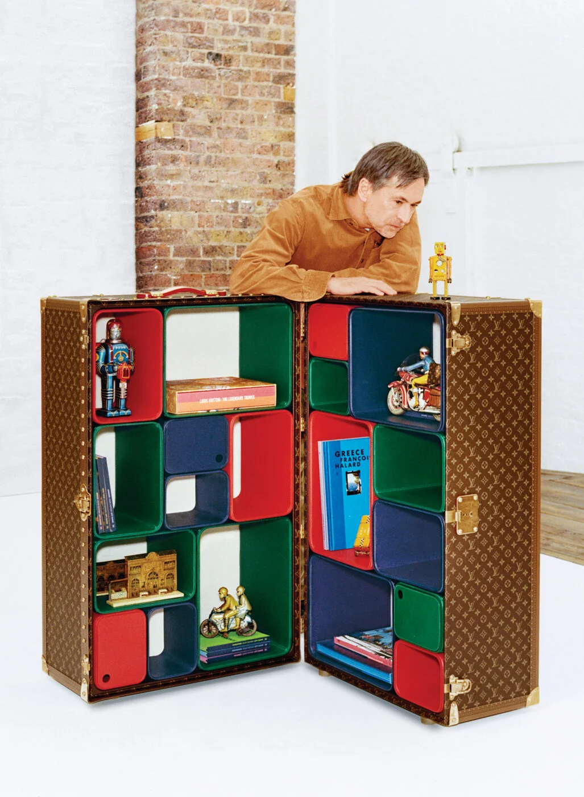

Q. 당신이라면 호기심의 트렁크에 무엇을 넣겠는가?
A. 처음엔 완전히 비워둘 거다. 아마 1년도 안 돼 꽉 찰지도 모른다. 그렇다면 대부분 여행지에서 사온 물건이 될 거다.나는 사물과 장소를 연관 짓곤 한다. 내가 머문 곳, 내 과거, 내 역사를 상징적인 물건으로 기념한다. 그래서 집에 자잘한 물건이 어디 둬야 할지 모를 정도로 많다. 아마 이것들이 호기심 트렁크에 한자리씩 차지할 거다. 이 트렁크의 또 다른 장점을 알려줄까? 내 과거사(물건)를 그만 보고 싶다면 트렁크를 접으면 된다. 게다가 무거워서 누가 훔쳐갈 수도 없다.
Q. 당신은 호기심이 많은가?
A. 물론! 호기심 탐구는 디자이너가 가져야 할 덕목이다. 궁금해하는 것을 넘어서 ‘왜 이럴까?’ ‘왜 더 좋을 수 없지?’ 같은 질문을 던진다. 세상이 완벽하다면 내 직업은 더 이상 필요 없을 거다.
Q. 디자인할 때 컴퓨터보다 노트 스케치를 고집하는 이유는?
A. 앞으로도 펜과 종이를 많이 사용할 거다. 스튜디오에서 나 말고는 모두 컴퓨터를 사용한다. 인내심이 부족한 나는 컴퓨터가 느려서 쓸 수 없다. 아날로그 방식으로 빨리 일을 처리하고 싶다. 내가 직원들과 세대가 다르기 때문이다(웃음). 만약에 컴퓨터 모니터에 손을 넣어서 일을 처리할 수 있다면 그때 쓸 거 같다. 무엇보다 디자인할 때 정교한 컴퓨터 프로그램이 도움을 줄 수도 있지만, 그것이 창의성을 발현시키지 않는다.
Q. 작업량이 주는 스트레스는 어떻게 감당하는가?
A. 직업이니까 당연하게 받아들인다. 40여 년 가까이 해왔기에 나름의 체계가 생겼다. 시작할 때와 멈출 때를 잘 안다. 20년 전과 비교하면 작업 속도가 두 배 빨라졌다. 효율은 높아졌고. 게다가 나는 하나에 오래 집중하면 금세 질려버린다. 그래서 일부러 다른 일을 벌이는지도 모른다. 다양한 분야에 관심을 갖고 늘 학습하려 한다. 아마 세상에서 배우기를 가장 좋아하는 사람 중 한 명일 거다.
Q. 작업 말고 생활도 아날로그 방식을 선호하는가?
인터넷이나 TV는 거의 보지 않고 책을 가까이하고 자연으로 여행을 떠나는 것처럼 말이다.
A. 물론 그렇다. 시간이 갈수록 더 아날로그화되는 것 같다. 예를 들어 문자보다 전화를 선호한다. 아니, 전화가 더 빠르고 자연스럽지 않나? 요즘은 다들 전화를 기피하는 것 같다.